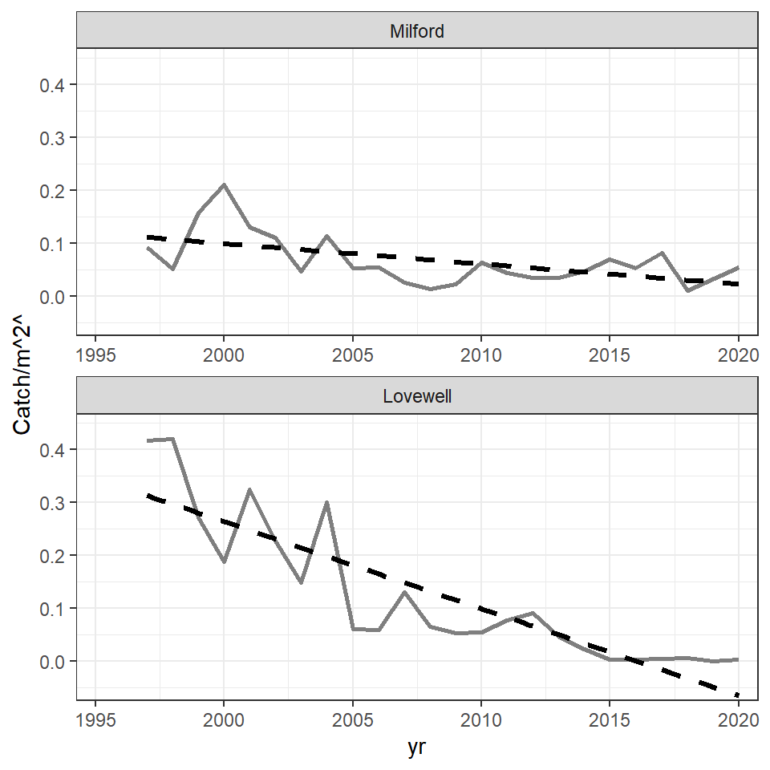
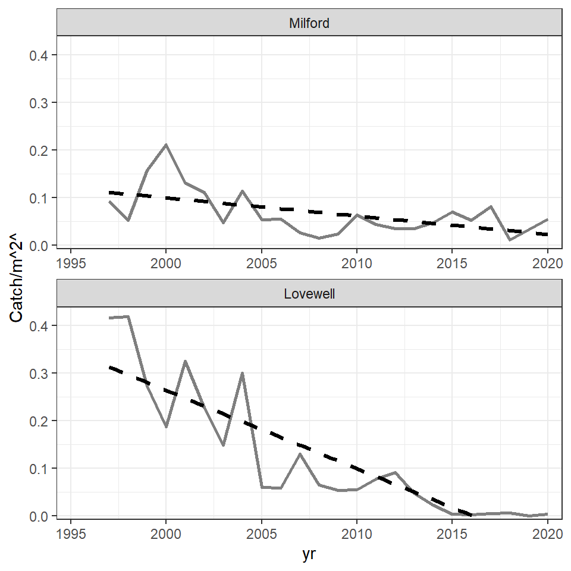
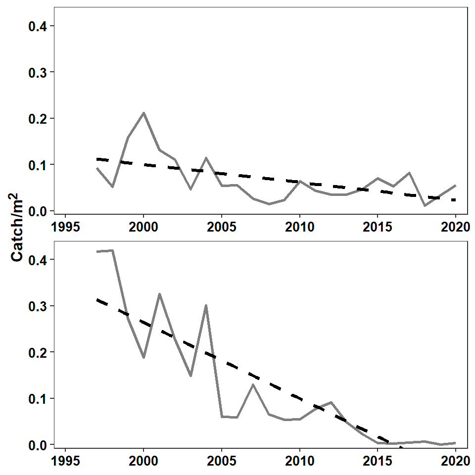
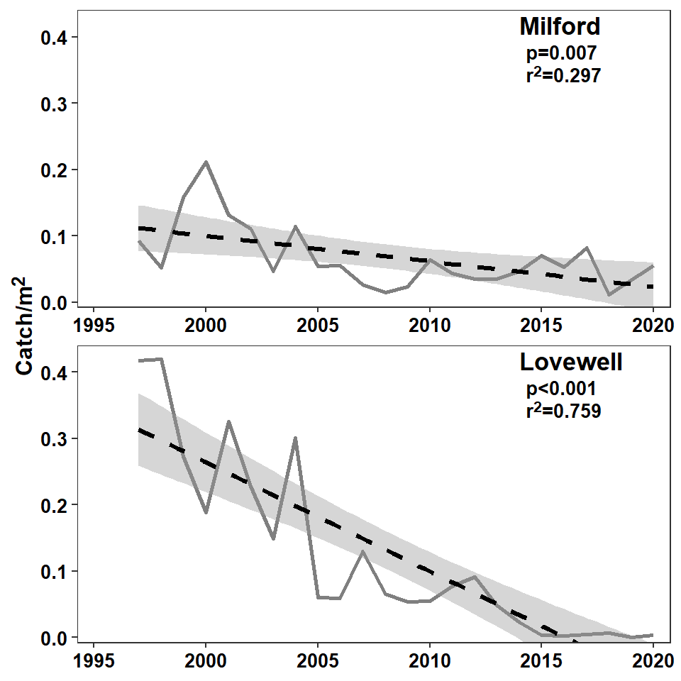
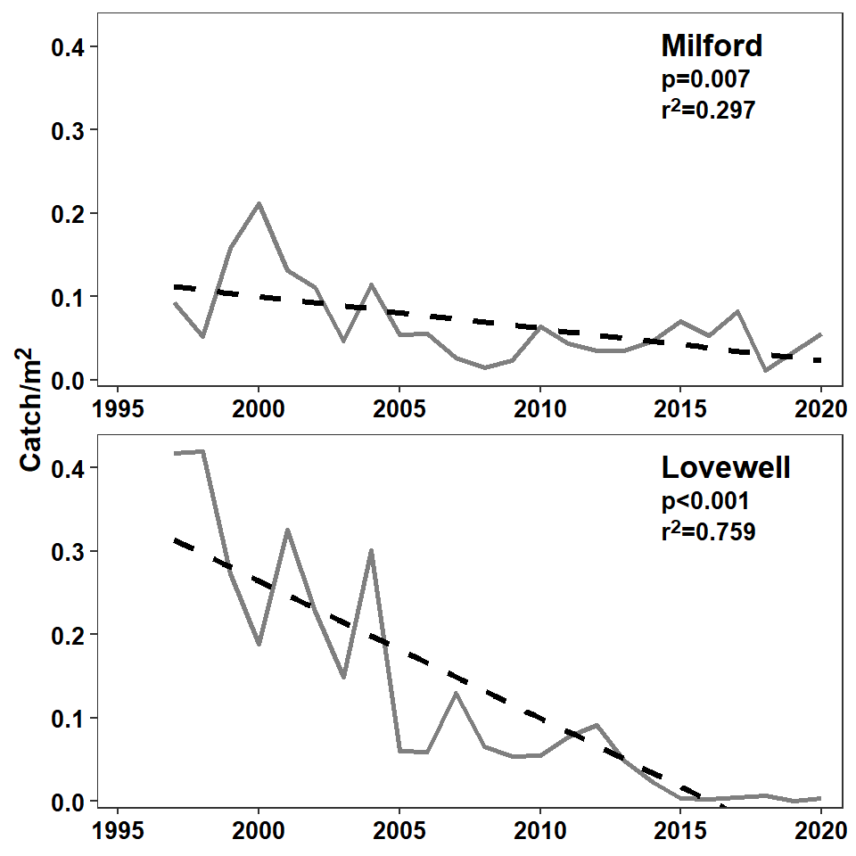

library(tidyverse) # for dplyr, ggplot2 packages
library(ggtext) # for use of markdown in text/labels
Series Note
This is the first of several posts related to Miller et al. (2022). I thank the authors for making their data available with their publication.
Introduction
Miller et al. (2022) examined life history characteristics of Goldeye (Hiodon alosoides) in two Kansas reservoirs. Their Figure 1 displayed a time series of catch-per-unit-effort (CPE) from 1997 to 2020 for both reservoirs, including a regression line to demonstrate the decline in abundance. I use ggplot2 here to recreate both figures.
The following packages are loaded for use below. A few functions from each of readxl, FSA, scales, and rstatix are used with :: such that the entire packages are not attached here.
Data Wrangling
Miller et al. (2022) provided the raw data for producing Figure 1 in the Data Supplement S1, which I loaded below. I converted the “reservoir” (impd) variable to a factor, reordered the levels so that the facets created below would be in the order used by the authors, and replaced the reservoir abbreviations with their longer names/labels.
dat <- read.csv("JFWM-21-090.S1.csv") |>
mutate(impd=factor(impd,levels=c("MILR","LOVR"),labels=c("Milford","Lovewell")))
FSA::headtail(dat)#R| impd yr fish nets net_area_m2 catch_m2
#R| 1 Lovewell 1997 496 16 1189.158 0.41710171
#R| 2 Lovewell 1998 499 16 1189.158 0.41962450
#R| 3 Lovewell 1999 324 16 1189.158 0.27246160
#R| 45 Milford 2017 73 20 891.870 0.08185049
#R| 46 Milford 2018 10 20 891.870 0.01121240
#R| 47 Milford 2020 49 20 891.870 0.05494074I double-checked to make sure that the provided CPE variable (catch_m2) was equal to catch (fish) divided by the areal effort (net_area_m2).1
1 all_equal() checks equality between two vectors with a tolerance for machine precision.
all.equal(dat$fish/dat$net_area_m2,dat$catch_m2)#R| [1] TRUEThese data are ready to recreate Figure 1.
Recreating Figure 1
Basic Plot with Regression Line
The basic time series plot is created with geom_line() by mapping yr to the x-axis and catch_m2 to the y-axis, and using a shade of gray and slightly thicker line to match the authors’ choices. A linear regression is added with geom_smooth() using method="lm".2 Here se=FALSE was used so a confidence band is not shown, and the line was changed to dashed, made black,3 and made a little thicker than the time series line to match the authors’ choices. A facet based on impd was created with ncol=1 to stack the two plots and scales="free_x" so that labeled ticks would appear on the x-axis of both facets. Finally, the y-axis was labelled (more on this below), both axis limits were controlled and were expanded in a way to try to match the authors’ choices, and the basic black-and-white theme was added.
2 The default is to add a loess smoother, lm is for a linear model.
3 It defaults to blue.
ggplot(data=dat,mapping=aes(x=yr,y=catch_m2)) +
geom_line(color="gray50",linewidth=1) +
geom_smooth(method="lm",se=FALSE,linetype="dashed",color="black",linewidth=1.2) +
facet_wrap(vars(impd),ncol=1,scales="free_x") +
scale_y_continuous(name="Catch/m^2^",expand=expansion(mult=c(0.02,0.10))) +
scale_x_continuous(limits=c(1995,2020),expand=expansion(mult=0.03)) +
theme_bw()
The portion of the regression line for Lovewell that extends below 0 was cut off in the published Figure 1. It is tempting to accomplish this by limiting the extent of the y-axis with limits= in scale_y_continuous() as has been done in other posts. However, in this case, that will remove the years for which the regression extends below zero from the data used to compute the regression, effectively altering the results. The better way to handle this is to limit the extent of the y-axis with ylim= in coord_cartesian(). With this all data is used in the regression, but the axis is clipped for viewing.
ggplot(data=dat,mapping=aes(x=yr,y=catch_m2)) +
geom_line(color="gray50",linewidth=1) +
geom_smooth(method="lm",se=FALSE,linetype="dashed",color="black",linewidth=1.2) +
facet_wrap(vars(impd),ncol=1,scales="free_x") +
scale_y_continuous(name="Catch/m^2^",expand=expansion(mult=c(0.02,0.10))) +
scale_x_continuous(limits=c(1995,2020),expand=expansion(mult=0.03)) +
coord_cartesian(ylim=c(0,0.4)) +
theme_bw()
The theme was then modified to try to match choices made by the authors. Specifically, the grid lines were removed; the x-axis title was removed; the axes tick mark labels were made slightly larger, bold, and black; and the facet strip labels were removed. In addition, the y-axis title was formatted with element_markdown() which forces any markdown language code in the title to be rendered appropriately. In this case, the “carets” around the “2” in name= (in scale_y_continuous()) is markup code to superscript the “2.” Other arguments to element_markdown() are treated the same as those in element_text(). Thus, the y-axis title was also made slightly larger and bold.
ggplot(data=dat,mapping=aes(x=yr,y=catch_m2)) +
geom_line(color="gray50",linewidth=1) +
geom_smooth(method="lm",se=FALSE,linetype="dashed",color="black",linewidth=1.2) +
facet_wrap(vars(impd),ncol=1,scales="free_x") +
scale_y_continuous(name="Catch/m^2^",expand=expansion(mult=c(0.02,0.10))) +
scale_x_continuous(limits=c(1995,2020),expand=expansion(mult=0.03)) +
coord_cartesian(ylim=c(0,0.4)) +
theme_bw() +
theme(panel.grid=element_blank(),
axis.title.x=element_blank(),
axis.text=element_text(size=10,face="bold",color="black"),
strip.text=element_blank(),
axis.title.y=element_markdown(size=12,face="bold"))
Reservoir and Regression Result Labels
The last part to add to the plot is the reservoir label along with the significance (of the slope) and “r-squared” value from the regression. This takes a little bit of work.
First, the regressions for each reservoir were fit “outside” of ggplot and the results returned from summary() were saved to individual objects.
mreg <- summary(lm(catch_m2~yr,data=filter(dat,impd=="Milford")))
lreg <- summary(lm(catch_m2~yr,data=filter(dat,impd=="Lovewell")))These objects contain the pertinent p-value and r-squared, which will be extracted for use. The p-value is in the second row and Pr(>|t|) column of the $coefficients portion of the results. These values were extracted from both regression results, saved into a vector ps, and then that vector was given to p_format() from rstatix for formatting. This particular use of p_format() will include the p= or p< label, will use one significant digit, and will convert any p-value that is less than 0.001 to “p<0.001”.
( ps <- c(mreg$coefficients[2,"Pr(>|t|)"],lreg$coefficients[2,"Pr(>|t|)"]) )#R| [1] 7.148242e-03 3.053910e-08( ps <-rstatix::p_format(ps,add.p=TRUE,accuracy=0.001,digits=1) )#R| [1] "p=0.007" "p<0.001"The r-squared values are stored in $r.squared of the regression results and are extracted below and placed into a vector rs. They are then rounded to three decimal places and appended to r^2^ which is markdown language for r2.
( rs <- c(mreg$r.squared,lreg$r.squared) )#R| [1] 0.2971323 0.7588716( rs <- paste0("r^2^=",round(rs,3)) )#R| [1] "r^2^=0.297" "r^2^=0.759"Finally, a small data frame was created that had the reservoir names (in factor format to match the original data frame) and the ps and rs pasted together with <br> in between in a variable called lbls. The <br> will force a “line break” when the markdown language is rendered, thus forming a label with the r-squared value beneath to p-value result.
dlbls <- data.frame(impd=factor(c("Milford","Lovewell"),levels=c("Milford","Lovewell")),
lbls=paste0(ps,"<br>",rs))
dlbls#R| impd lbls
#R| 1 Milford p=0.007<br>r^2^=0.297
#R| 2 Lovewell p<0.001<br>r^2^=0.759The reservoir names are added with geom_text() below as described in this post. Note here that size=13/.pt will use a 13 pt font and that fontface="bold" will make the font bold. geom_richtext() is very similar to geom_text() except that it will render the markdown code appropriately. By default geom_richtext() places a box around the text, which is removed with label.color=NA. The reservoir label and the regression statistics were placed on the plot separately because the authors used a larger font for the reservoir label.
ggplot(data=dat,mapping=aes(x=yr,y=catch_m2)) +
geom_line(color="gray50",linewidth=1) +
geom_smooth(method="lm",se=FALSE,linetype="dashed",color="black",linewidth=1.2) +
geom_text(mapping=aes(label=impd),
x=2014,y=Inf,vjust=1.3,hjust=0,size=13/.pt,fontface="bold",
check_overlap=TRUE) +
geom_richtext(data=dlbls,mapping=aes(label=lbls),
x=2014,y=Inf,vjust=1.5,hjust=0,size=10/.pt,fontface="bold",
label.color=NA) +
facet_wrap(vars(impd),ncol=1,scales="free_x") +
scale_y_continuous(name="Catch/m^2^",expand=expansion(mult=c(0.02,0.10))) +
scale_x_continuous(limits=c(1995,2020),expand=expansion(mult=0.03)) +
coord_cartesian(ylim=c(0,0.4)) +
theme_bw() +
theme(panel.grid=element_blank(),
axis.title.x=element_blank(),
axis.text=element_text(size=10,face="bold",color="black"),
strip.text=element_blank(),
axis.title.y=element_markdown(size=12,face="bold"))
Further Thoughts
Confidence Band
In the authors’ Figure 5 they included a confidence band around the fitted von Bertalanffy growth curve. They did not include a confidence band in their Figure 1. A confidence band can be added to Figure 1 by simply removing se=FALSE from geom_smooth().4
4 The default is se=TRUE which adds the confidence band.
ggplot(data=dat,mapping=aes(x=yr,y=catch_m2)) +
geom_line(color="gray50",linewidth=1) +
geom_smooth(method="lm",linetype="dashed",color="black",linewidth=1.2) +
geom_text(mapping=aes(label=impd),
x=2014,y=Inf,vjust=1.3,hjust=0,size=13/.pt,fontface="bold",
check_overlap=TRUE) +
geom_richtext(data=dlbls,mapping=aes(label=lbls),
x=2014,y=Inf,vjust=1.5,hjust=0,size=10/.pt,fontface="bold",
label.color=NA) +
facet_wrap(vars(impd),ncol=1,scales="free_x") +
scale_y_continuous(name="Catch/m^2^",expand=expansion(mult=c(0.02,0.10))) +
scale_x_continuous(limits=c(1995,2020),expand=expansion(mult=0.03)) +
coord_cartesian(ylim=c(0,0.4)) +
theme_bw() +
theme(panel.grid=element_blank(),
axis.title.x=element_blank(),
axis.text=element_text(size=10,face="bold",color="black"),
strip.text=element_blank(),
axis.title.y=element_markdown(size=12,face="bold"))
Information Label
The process of adding the reservoir name with the regression results above was hacky because the reservoir name was in a larger font then the regression results. This, can, however be solved more elegantly, but more verbosely, using HTML code in geom_richtext().5 Here, though, the reservoir label and the regression results need to be wrapped in paired <span> and <\span> couplets, with <span> including a style= that sets the font size as shown below.
5 Markdown is flexible enough to render HTML code appropriately.
tmp <- c("Milford","Lovewell")
dlbls <- data.frame(impd=factor(tmp,levels=tmp),
lbls=paste0("<span style='font-size:13pt;'>",tmp,"</span><br>",
"<span style='font-size:10pt;'>",ps,"<br>",
rs,"</span>"))
dlbls#R| impd
#R| 1 Milford
#R| 2 Lovewell
#R| lbls
#R| 1 <span style='font-size:13pt;'>Milford</span><br><span style='font-size:10pt;'>p=0.007<br>r^2^=0.297</span>
#R| 2 <span style='font-size:13pt;'>Lovewell</span><br><span style='font-size:10pt;'>p<0.001<br>r^2^=0.759</span>With this new dlbls data frame, the geom_text() from above that put on the reservoir labels can be removed and, in geom_richtext(), the size= should be removed as the font size is set in dlbls and vjust= should be adjusted up a little bit.
ggplot(data=dat,mapping=aes(x=yr,y=catch_m2)) +
geom_line(color="gray50",linewidth=1) +
geom_smooth(method="lm",se=FALSE,linetype="dashed",color="black",linewidth=1.2) +
geom_richtext(data=dlbls,mapping=aes(label=lbls),
x=2014,y=Inf,vjust=1.1,hjust=0,fontface="bold",
label.color=NA) +
facet_wrap(vars(impd),ncol=1,scales="free_x") +
scale_y_continuous(name="Catch/m^2^",expand=expansion(mult=c(0.02,0.10))) +
scale_x_continuous(limits=c(1995,2020),expand=expansion(mult=0.03)) +
coord_cartesian(ylim=c(0,0.4)) +
theme_bw() +
theme(panel.grid=element_blank(),
axis.title.x=element_blank(),
axis.text=element_text(size=10,face="bold",color="black"),
strip.text=element_blank(),
axis.title.y=element_markdown(size=12,face="bold"))
Tip
If you know a little bit of markdown or HTML, then ggtext is a simple but powerful package for handling these kinds of issues. See more about ggtext here.
References
Miller, B. T., E. Flores, D. S. Waters, and B. C. Neely. 2022. An evaluation of Goldeye life history characteristics in two Kansas reservoirs. Journal of Fish and Wildlife Management 13(1):243–249.
Reuse
Citation
BibTeX citation:
@online{h. ogle2023,
author = {H. Ogle, Derek},
title = {Miller Et Al. (2022) {CPE} {Plot}},
date = {2023-03-29},
url = {https://fishr-core-team.github.io/fishR//blog/posts/2023-3-29_Milleretal2022_Fig1},
langid = {en}
}
For attribution, please cite this work as:
H. Ogle, D. 2023, March 29. Miller et al. (2022) CPE Plot. https://fishr-core-team.github.io/fishR//blog/posts/2023-3-29_Milleretal2022_Fig1.